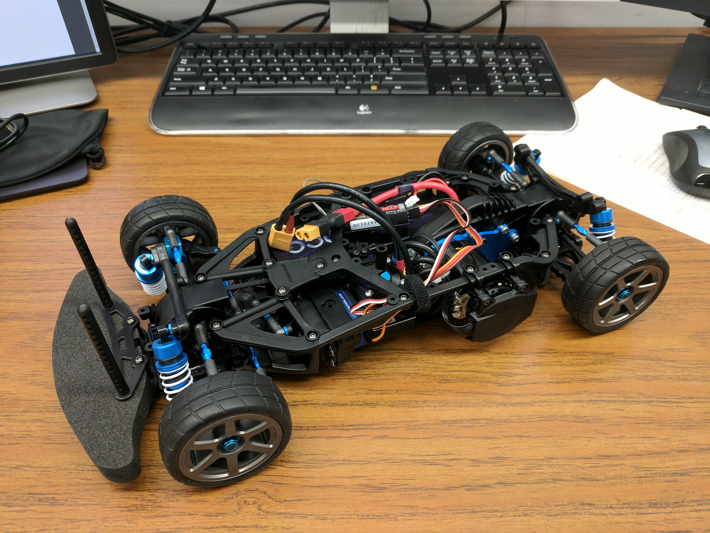
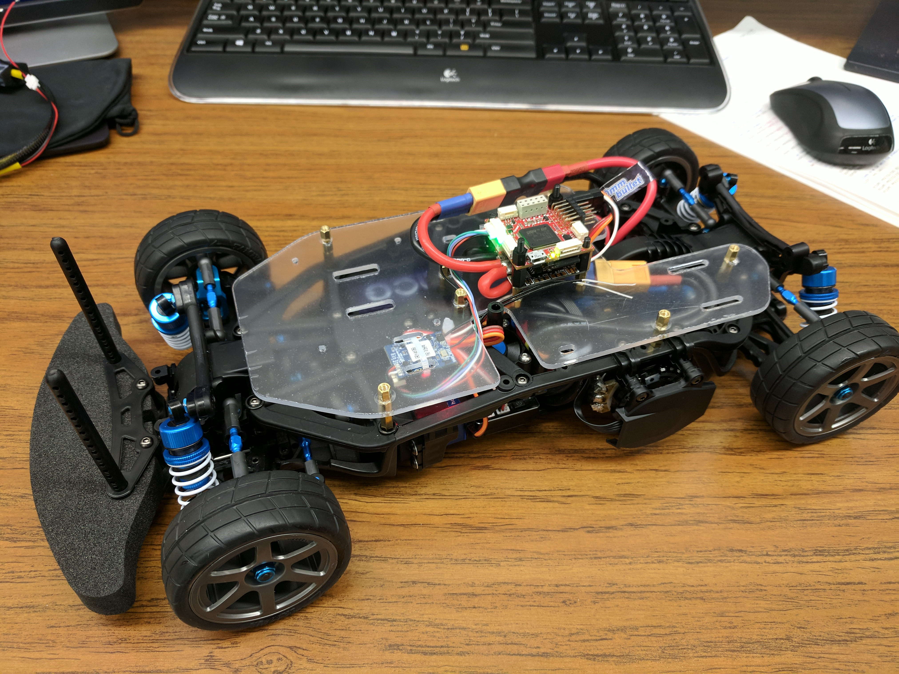

Autonomous RC Car¶
1. Hardware Components¶
Since the RC car is built for the purpose of study and research, it is useful to leave some flexibility for possible extensions when choosing components. Also constrained by my budget, I try to reuse parts I bought for my quadrotors. The goal is to set up the platform as fast as possible so that I could start developing software early. I try my best to make a good balance between cost and performance. But the project just hasn’t reached the point for hardware optimization yet.
a. RC Car Chassis and Basic Electronics¶
- Tamiya TA07 Pro
- (Jazrider Aluminum Front C-Hub Carriers)
- HobbyStar DSHV-300T Digital, Mega-Torque Titanium Gear, High-Voltage Servo
- HobbyStar 1/10 Race Combo: 120A Turbo ESC + 540 Sensored Motor 10.5T
- FrSky Taranis X9D Plus 2.4GHz ACCST Radio (Mode 2)
- FrSky XSR 2.4GHz 16CH ACCST Receiver S-Bus CPPM Output
- Note: 1. Some servos may expect control signals other than PWM, for example SBUS. For simplicity, only PWM servos are supported by the firmware now.
- I use FrSky Taranis radio because I own one for my quadrotors. It is used for manual control of the car and emergency brake during autonomous driving. You need at least 2 channels to control a car(steering and throttle). But more than 2 are planned to be used in the firmware for arm/disarm, mode switch etc. 6 or 8 channel should be enough.
- You can optionally upgrade some parts and the upgrade of aluminum front C-Hub carriers is highly recommended.
b. Power System¶
- Gens ace 7.4V 5000mAh 2S 50C LiPo Battery Pack HardCase with Deans T Plug
- XT60 Female to Deans T Plug Male Connector Adapter
- Matek V3.1 PDB Power Distribution Board Mini Power Hub with BEC 5V & 12V for Multicopter Quadcopter
- ZTW UBEC 10A Peak continuous 6A 6.0V 5.5V.5.0V adjustable
- Note: 1. Most FPV quadrotors use 3S, 4S LiPo batteries but for RC cars 2S batteries (with a lot more mAh) are more common.
- RC Car batteries mostly come with Deans T plug, while it’s more common to see XT60 connectors on LiPo batteries for multicopters. I add an XT60 adapter on the car because I want to keep the compatibility across all my toys, batteries and the charger for easy maintenance.
- A power distribution board (PDB) is used because I need to distribute power from the battery to ESC (which powers motor and servo), microcontroller, single board computer and sensors.
- This PDB could support 20A continous current and 30A peak current from each channel. To avoid overheating and board damage, you should use the output pads closest to the input pads for the ESC connection and make solid/complete contact points when soldering.
- The PDB could be a bottle neck for the power system, but I didn’t know any better choices designed specifically for RC cars. A custom-designed PDB could be considered in the future. But this off-the-shelf choice works without any problem so far.
- The embedded 5V BEC on the PDB is used to power the MCU. A 5V UBEC supporting 6A continuous current is used to power raspberry pi or UP board. If a nvidia jetson is used in the future, an extra 4S battery and 12V BEC may be added.
- The 12V BEC on the PDB should not be used because it would require a 4s battery as input. It will not work properly with a 2S battery (7.4V).
- If using multiple battery design (2S + 4S), it might be a good idea to power the MCU and servo/motor from the same power source. By doing so you could still maintain manual control if the battery for SBC and sensors dies first.
c. Mechanical Parts¶
- M3 Brass Spacer Set Male-Female Spacers Hex Stand-Off Pillars DIY Set
- M2.5 Brass Spacers Hex Brass Standoffs Stainless Steel Screws Nuts Assorted Kit
- Acrylic Sheet for mounting plate, from Homedepot or Lowe’s
d. Control System¶
- Pixracer flight controller
- (Raspberry Pi 3)
- (UP Board)
- Note: 1. Pixracer is a flight controller board for multicopters. I choose it because it is compact while having a rich set of sensors (2 sets of IMU) and hardware interfaces.
- Available interfaces on pixracer: serial, I2C, SPI, CAN, 6 channels of PWM output (2 of which can be used for servo/motor control and the rest can be used for input pulse capture).
- Raspberry Pi 3 and UP board are used for experiments now. The final choice of single board computer is to be determined.
2. Assembly Notes¶
a. Tamiya TA07 Pro Chassis¶
It is quite straightforward to follow the assembly instructions of the chassis.
Additional information from the Internet:
- Review: Tamiya TA07 Pro Touring Car
- Tamiya TA07 Pro Online Build
- TA07 Pro Build and Design review
- Online Build: Tamiya TA07 Pro
- Note: 1. Don’t forget to buy instant glue, which is required but not included in the package. Other than that you get everything you need to put this chassis together.
- A PPM receiver was chosen for its small size. But it’s convenient if you have a receiver that outputs PWM signal. You can test the servo and DC motor conveniently using only your trasmitter, without the MCU.

b. Motor and Servo Installation¶
Follow the instructions.
Note: 1. Don’t tighten servo related parts before you finish adjusting the neutral position of servo. You could adjust the control signal for a neutral position but you don’t want to get off the mechanical neutral position too much during installation.

c. Wheels and Tires¶
Note: 1. Make sure you don’t skip using glue on the tires to attach them to the wheels. They’re going to get off during the high-speed driving if you don’t. And I tried that.
{kind=link}
d. Lower Mounting Plate¶
A mounting plate is very useful for attaching all parts to the chassis nicely. The current design tries to keep the lower plate as close to the chassis as possible but leave enough clearance to moving parts.
- Note: 1. Currently the ESC and PDB are connected using a pair of XT60 connectors. In the future this connection point could be removed and the wires from the ESC could be soldered to the PDB directly.
- The receiver is attached to the plate from the bottom but the antenna are left above.
- The receiver wires and ESC/servo signal wires go below the plate and the connectors could reach the MCU through reserved holes on the plate.
- Make sure the wires don’t interfere with the belt/gears below the plate. If organized properly, they shouldn’t move underneath the deck.
- See the soldering joints I made in the following picture. The input wires from the battery are almost directly connected to the wires to the ESC. Remember to use a wider soldering tip. A very fine tip will not work.
{kind=link}
And what the car looks like after installing the mounting plate.
{kind=link}